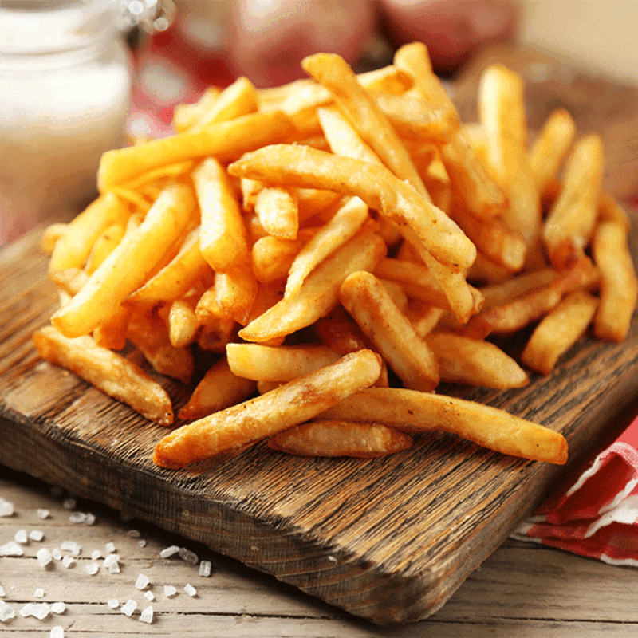

French Fries

Description
French fries are long, thin pieces of potato that have been deep-fried to a
golden-brown crisp, typically served hot. A beloved side dish and snack worldwide,
they are known for their combination of a crunchy exterior and a soft, fluffy interior.
The cut and preparation can vary, creating different styles like shoestring, crinkle-cut,
or steak fries. They are commonly seasoned with salt and served with condiments like ketchup,
mayonnaise, or vinegar.
While the exact origin is debated, with both Belgium and France having strong claims, the
widespread popularity of French fries was cemented by the rise of fast-food chains.
Ingredients:
- 4 large Russet potatoes
- Canola oil, or other high-smoke-point oil, for frying
- Salt, for seasoning
Steps:
-
Prepare the potatoes: Peel the potatoes and cut them into even-sized sticks,
about 1/3 to 1/2 inch thick.
-
Soak the potatoes: Place the cut potatoes in a large bowl of cold water and let them
soak for at least 30 minutes, which helps remove excess starch.
-
Dry the potatoes: Drain the potatoes and pat them completely dry with a clean kitchen
towel or paper towels. Excess moisture will cause oil to splatter and create soggy fries.
-
First fry (blanch): Heat oil in a large pot to 325°F (160°C). Fry the potatoes in batches
for 4-6 minutes, or until they are soft but not yet browned.
-
Cool the fries: Remove the blanched fries from the oil and spread them on a wire rack or
baking sheet to cool completely.
-
Second fry: Increase the oil temperature to 375°F (190°C). Fry the cooled potatoes again
for 2-4 minutes until they are golden brown and crispy.
-
Season and serve: Remove the fries from the oil, drain on paper towels, and season
immediately with salt while they are still hot.
Home